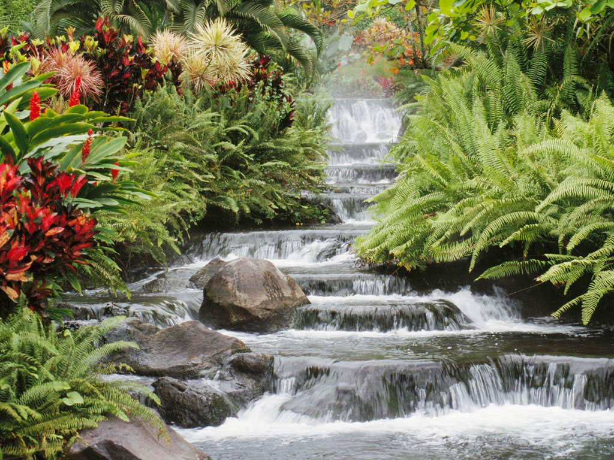
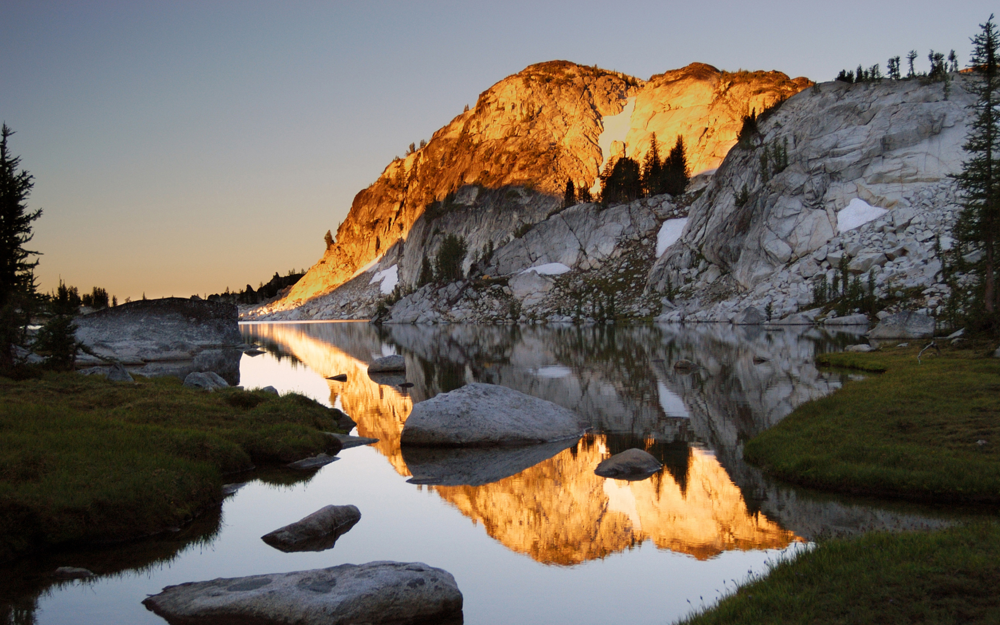

KOTTAYAM :
Kottayam is located at a distance of 76 kilometers from Kochi in Kerala, and is one of the most riveting Kerala backwater destinations.
Kottayam, an incredibly beautiful tourist attraction with its vistas of green hills, mangrove forests and coconut groves interposed with waterways, offers excellent opportunities for Aqua Tourism.
 
HOME
NEXT